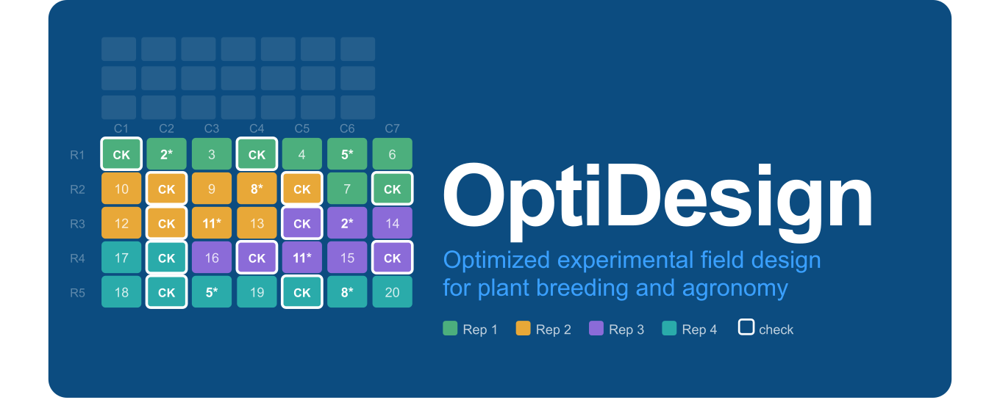

Overview
OptiDesign provides tools for constructing, evaluating, and optimizing experimental field designs for plant breeding and related agricultural applications. It integrates:
- field layout construction
- genetic structure (family, pedigree, genomic relationships)
- optional spatial dispersion optimization
- statistical efficiency evaluation under mixed models
- criterion-driven design optimization
into a single, flexible workflow built around two design families.
Why OptiDesign?
In many breeding programs, experimental design is treated as a purely logistical step. However, design choices strongly affect:
- precision of treatment estimates
- genomic prediction accuracy
- ability to separate genetic from environmental effects
- robustness to field spatial heterogeneity
OptiDesign allows users to explicitly control these aspects at the design stage, rather than correcting them post hoc during analysis. Uniquely, OptiDesign goes beyond single-design construction by offering criterion-driven optimisation — searching across many randomisations to return the design with the best statistical properties for your specific trial objective.
Core Design Concepts
OptiDesign is built around three key ideas.
1. Field realism
Designs reflect how trials are actually implemented in the field:
- fixed grid layouts (
n_rows × n_cols) - field-book ordering and serpentine movement
- contiguous replicate structure
- unused cells placed at the end of the field stream
2. Genetic awareness
Entries can be arranged based on known genetic structure:
- family labels
- pedigree relationships (A matrix)
- genomic relationships (GRM)
This enables reduction of local genetic relatedness, improved sampling of genetic diversity across spatial blocks, and better estimation of genetic effects.
3. Integrated evaluation and optimisation
Designs can be evaluated and optimised using mixed-model principles before field implementation:
- fixed-effect precision (BLUEs) — A and D optimality criteria
- random-effect prediction (BLUP / GBLUP / PBLUP) — mean PEV and CDmean
- spatial residual structures (IID, AR1, AR1×AR1)
- criterion-driven search returning the statistically best design
Package Architecture
OptiDesign follows a single-responsibility architecture: construction, evaluation, and optimisation are separated into distinct functions that can be called independently or chained together.
| Function | Role | Design family |
|---|---|---|
prep_famoptg() |
Construction | Repeated-check block |
evaluate_famoptg_efficiency() |
Evaluation | Repeated-check block |
optimize_famoptg() |
Optimisation (RS) | Repeated-check block |
alpha_rc_stream() |
Construction | Alpha row-column stream |
evaluate_alpha_efficiency() |
Evaluation | Alpha row-column stream |
optimize_alpha_rc() |
Optimisation (RS / SA / GA) | Alpha row-column stream |
Design Family 1: Repeated-Check Block Designs
prep_famoptg() — construction
Constructs repeated-check block designs with flexible replication, covering augmented designs, partially replicated (p-rep) designs, and RCBD-type repeated-check designs. Checks appear in every block; entries may be replicated, partially replicated, or unreplicated.
Use this function when:
- you have many entries but limited field resources
- checks must appear in every block
- you need a flexible framework covering augmented, p-rep, or balanced layouts
- you are working in early- or intermediate-stage breeding trials
Key capabilities:
| Feature | Details |
|---|---|
| Replication | Flexible per-entry replication |
| Block allocation | P-rep constraint: no treatment appears twice in the same block |
| Design types | Augmented, p-rep, RCBD-type repeated-check |
| Grouping | Family labels, GRM, or pedigree (A) matrix |
| Dispersion optimization | Optional; reduces clustering of related entries |
Key design rule: a treatment can appear multiple times overall, but always in distinct blocks — never twice in the same block.
evaluate_famoptg_efficiency() — evaluation
Evaluates the statistical efficiency of a design produced by prep_famoptg(). The mixed model contains Block + Row + Column random effects (no replicate or incomplete-block nesting). Uses variance component sigma_b2 for the flat block structure. Fully decoupled from construction — the same field book can be evaluated multiple times under different model assumptions without rebuilding the layout.
Supported criteria:
| Criterion | Effect type | Direction |
|---|---|---|
| A-criterion | Fixed or random | Lower is better |
| D-criterion | Fixed only | Lower is better |
| CDmean | Random only | Higher is better |
optimize_famoptg() — optimisation
Wraps prep_famoptg() and evaluate_famoptg_efficiency() in a Random Restart (RS) loop. RS is used exclusively because the p-rep constraint is enforced by construction at every call — permutation-based methods would require block-aware swap logic to preserve it. Every candidate design is valid by construction. Supports A, D, both, and CDmean criteria.
Design Family 2: Alpha Row-Column Stream Designs
alpha_rc_stream() — construction
Constructs alpha row-column designs on a fixed grid using a stream-based layout. The field is converted into a single ordered stream of positions, split into contiguous replicate segments, then further divided into incomplete blocks. Checks appear in every incomplete block; entries appear once per replicate.
Block-size constraints are expressed as total block size (checks + entries) through min_block_size and max_block_size. The function translates these into entry-slot limits internally and derives or validates the number of incomplete blocks per replicate accordingly.
Use this function when:
- field dimensions are fixed and cannot change
- planting follows field-book order
- replicates are defined operationally rather than geometrically
- checks must appear in every incomplete block
- you want to control block sizes in whole-block terms
Key capabilities:
| Feature | Details |
|---|---|
| Grid | Fixed n_rows × n_cols
|
| Replicates | Contiguous field segments |
| Block sizes | Controlled via min_block_size / max_block_size (total: checks + entries) |
| Checks | Present in every incomplete block |
| Block count | User-fixed or automatically derived as the largest feasible value |
| Grouping | Family labels, GRM, or pedigree (A) matrix |
| Dispersion optimization | Optional |
Important: unused cells are placed only at the end of the field stream, not scattered — which is critical for practical field implementation.
evaluate_alpha_efficiency() — evaluation
Evaluates the statistical efficiency of a design produced by alpha_rc_stream(). The mixed model contains Rep + IBlock(Rep) + Row + Column random effects. Uses variance components sigma_rep2 and sigma_ib2 for replicate and incomplete-block variance. Supports the same A, D, and CDmean criteria as evaluate_famoptg_efficiency().
optimize_alpha_rc() — optimisation
Wraps alpha_rc_stream() and evaluate_alpha_efficiency() in an optimisation loop with three search strategies:
| Method | Description | Best for |
|---|---|---|
| RS (Random Restart) | Generate n_restarts independent designs, return the best |
Quick exploration, guaranteed validity |
| SA (Simulated Annealing) | Iterative entry-permutation swaps with temperature-governed acceptance | Escaping local optima |
| GA (Genetic Algorithm) | Population of permutations evolved via OX1 crossover, swap mutation, and elitism | Thorough global search |
All three methods preserve all structural constraints by construction. Supports A, D, both, and CDmean criteria.
Key Differences Between Design Families
| Feature |
prep_famoptg family |
alpha_rc_stream family |
|---|---|---|
| Blocking structure | Flat blocks | Replicates → incomplete blocks |
| Replication | Flexible per-entry | Uniform across entries |
| Design types | Augmented, p-rep, RCBD-type | Alpha-lattice |
| Block variance | sigma_b2 |
sigma_rep2 + sigma_ib2
|
| Optimisation methods | RS only | RS, SA, GA |
| P-rep constraint | Enforced | Not applicable |
Grouping Options
Both families support three grouping strategies for adjacency scoring within blocks and genomic dispersion:
| Strategy | Source | Best for |
|---|---|---|
| Family-based | User-defined labels | Simple, interpretable grouping |
| GRM-based | Genomic similarity matrix | Captures real genomic relationships |
| Pedigree-based | A matrix | When genomic data is unavailable |
Efficiency Criteria
| Criterion | Meaning | Direction | Available for |
|---|---|---|---|
| A-criterion | Mean pairwise contrast variance (fixed) or mean PEV (random) | Lower is better | Both families |
| D-criterion | Geometric mean of contrast covariance eigenvalues | Lower is better | Fixed effects only |
| CDmean | Mean coefficient of determination for GEBV prediction | Higher is better | Random effects + GBLUP/PBLUP |
CDmean is defined as:
and directly measures the expected reliability of genomic prediction. It is particularly useful for optimising training population designs in genomic selection (Rincent et al. 2012).
Typical Workflows
Repeated-check block design
library(OptiDesign)
# 1. Construct
design <- prep_famoptg(
check_treatments = checks,
check_families = check_fam,
p_rep_treatments = prep_trts,
p_rep_reps = rep(2L, length(prep_trts)),
p_rep_families = prep_fam,
unreplicated_treatments = unrep_trts,
unreplicated_families = unrep_fam,
n_blocks = 5, n_rows = 15, n_cols = 20
)
# 2. Evaluate
eff <- evaluate_famoptg_efficiency(
field_book = design$field_book,
n_rows = 15, n_cols = 20,
check_treatments = checks,
treatment_effect = "fixed",
residual_structure = "AR1xAR1",
rho_row = 0.10, rho_col = 0.10
)
eff$A_criterion # lower is better
eff$D_criterion
# 3. Or optimise directly (returns best of 50 random designs)
opt <- optimize_famoptg(
check_treatments = checks,
check_families = check_fam,
p_rep_treatments = prep_trts,
p_rep_reps = rep(2L, length(prep_trts)),
p_rep_families = prep_fam,
unreplicated_treatments = unrep_trts,
unreplicated_families = unrep_fam,
n_blocks = 5, n_rows = 15, n_cols = 20,
treatment_effect = "fixed",
residual_structure = "AR1xAR1",
rho_row = 0.10, rho_col = 0.10,
criterion = "A", n_restarts = 50
)
opt$optimization$best_score
opt$optimization$score_historyAlpha row-column stream design
library(OptiDesign)
# 1. Construct
design <- alpha_rc_stream(
check_treatments = checks,
check_families = check_fam,
entry_treatments = entries,
entry_families = entry_fam,
n_reps = 3, n_rows = 30, n_cols = 20,
min_block_size = 19, max_block_size = 20
)
# 2. Evaluate
eff <- evaluate_alpha_efficiency(
field_book = design$field_book,
n_rows = 30, n_cols = 20,
check_treatments = checks,
treatment_effect = "fixed",
residual_structure = "AR1xAR1",
rho_row = 0.10, rho_col = 0.10
)
eff$A_criterion
eff$D_criterion
# 3. Or optimise directly using Simulated Annealing
opt <- optimize_alpha_rc(
check_treatments = checks,
check_families = check_fam,
entry_treatments = entries,
entry_families = entry_fam,
n_reps = 3, n_rows = 30, n_cols = 20,
min_block_size = 19, max_block_size = 20,
treatment_effect = "fixed",
residual_structure = "AR1xAR1",
rho_row = 0.10, rho_col = 0.10,
method = "SA", criterion = "A",
n_restarts = 5, sa_max_iter = 500
)
opt$optimization$best_scoreGenomic prediction optimisation (CDmean)
library(OptiDesign)
# Maximise CDmean for genomic selection training population
opt_cdmean <- optimize_alpha_rc(
check_treatments = checks,
check_families = check_fam,
entry_treatments = entries,
entry_families = entry_fam,
n_reps = 3, n_rows = 30, n_cols = 20,
min_block_size = 19, max_block_size = 20,
treatment_effect = "random",
prediction_type = "GBLUP",
K = my_kinship_matrix,
varcomp = list(
sigma_g2 = 0.4, sigma_e2 = 0.6,
sigma_rep2 = 0.1, sigma_ib2 = 0.05,
sigma_r2 = 0.02, sigma_c2 = 0.02
),
method = "GA",
criterion = "CDmean",
ga_pop_size = 20, ga_n_generations = 50
)
opt_cdmean$efficiency$CDmean # mean GEBV prediction reliability
opt_cdmean$optimization$best_score # positive CDmean, higher is betterInstallation
Install from GitHub with vignettes (recommended):
install.packages("remotes")
remotes::install_github("FAkohoue/OptiDesign",
build_vignettes = TRUE,
dependencies = TRUE
)Install without vignettes for a faster install:
remotes::install_github("FAkohoue/OptiDesign",
build_vignettes = FALSE,
dependencies = TRUE
)Documentation
Full documentation, function reference, and tutorials are available at:
https://FAkohoue.github.io/OptiDesign/
To read the vignette after installation:
vignette("OptiDesign-introduction", package = "OptiDesign")Citation
If you use OptiDesign in published research, please cite:
Akohoue, F. (2026).
OptiDesign: Optimized Experimental Field Design for Plant Breeding.
R package version 0.1.0.
https://github.com/FAkohoue/OptiDesignIf you use CDmean-based optimisation, additionally cite:
Rincent, R., Laloë, D., Nicolas, S., et al. (2012).
Maximizing the reliability of genomic selection by optimizing the calibration
set of reference individuals. Genetics, 192(2), 715–728.
https://doi.org/10.1534/genetics.112.141473Contributing
Issues, bug reports, and feature suggestions are welcome: https://github.com/FAkohoue/OptiDesign/issues